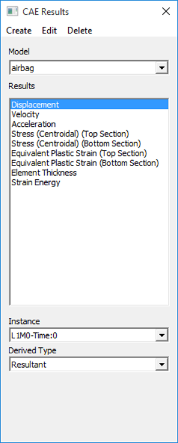
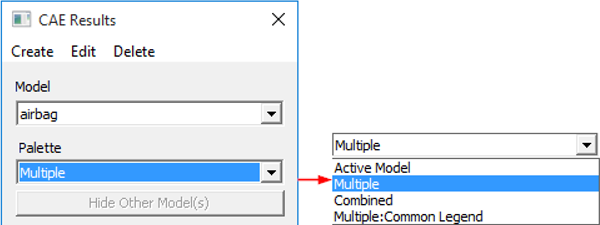
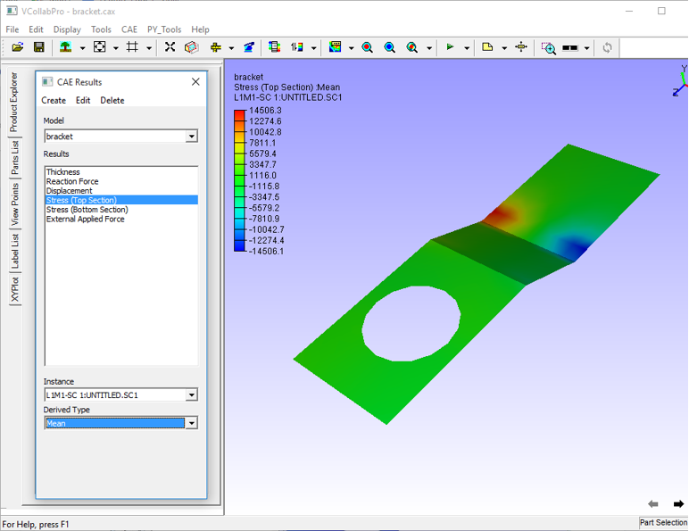
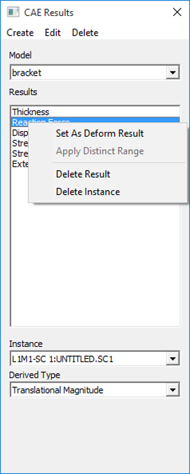
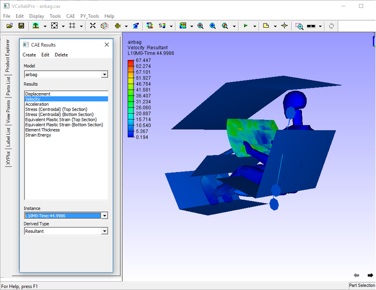
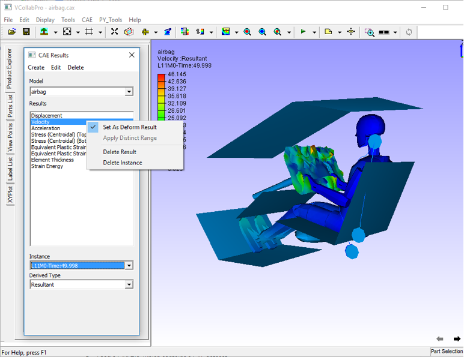
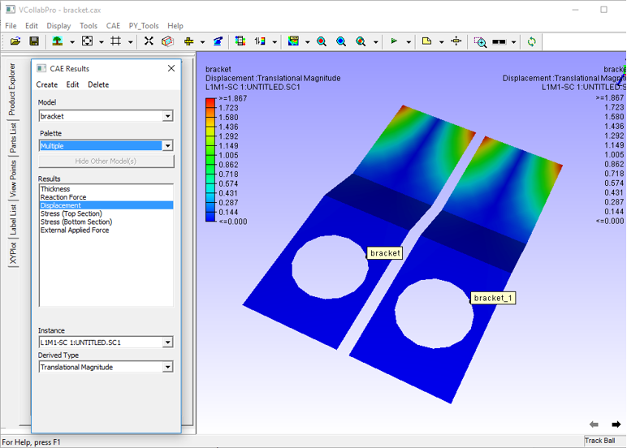
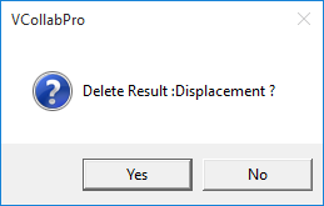
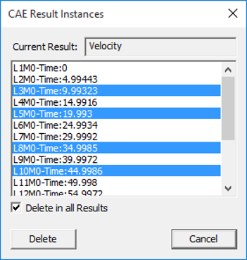

Result List
The Result List option found under CAE Menu allows the user to select a result, derived type and instance (load case and mode cases) for all the CAE models.
Result List Panel
The CAE Results Panel, shown below, is the first panel that appears on clicking Result List

Palette Options
Three additional options will be enabled if two or more models exist or have been merged.

Active Model
Only the current model is active. A single color palette for the active model is displayed. The active model is displayed with color plot and all other models are displayed in part color.
Multiple
Multiple models are active. Each model is displayed with its own color palette and result. This option is default for the merged model case.
Combined
In this mode all models are displayed using a current model palette and results. Only the common palette is displayed. The result list displays only common results. The changes to palette/legend parameters are applied to all models. Result considered for this legend, across all models, is the same.
Multiple: Common Legend
A single legend is applied across multiple models. Result considered for this legend may not be the same for all models. However, it is the same in case of Combined palette.
Hide Other Model(s) : This option hides all other models existing in the scene.
Combined Palette option
- Responds to all models for 'CAE Results' dialog events, usually not.
- Applies current model palette on the existing all models.
- Applies No-Result value, if user clicked result is not available for other models.
- Animates both models for common result selected.
- If any model does not contain user selected result, no linear animation exists for the model.
- Allows users to probe all models.
- Allows users to save this state into viewpoint states.
Benefits
- Users can merge two datasets with similar geometry and compare the CAE results.
- Visualize the differences on CAE design through linear and transient animations.
- Users can probe both models and compare nodal results.
- Users can save the compared results into CAX as viewpoint states.
Selection of results and Its effects on Legend and model contour
VCollab Pro computes CAE result values for visible parts only, while changing the result. If the user hides one part and applies a new result to the model, Legend is computed for visible parts alone. Computed color information is applied to the model for contour values.
Steps to select a Result
- Load an input file. E.g., barcket2.cax.
- Click CAE | Results.
- Select Stress from the result list.
- Select L1M1 instance from the Instance drop down list.
- Select Mean Stress derived type from the Derived Type drop down list.
- Observe the changes in the model as well as in the text information in the viewer as below.

Context Menu Within the Panel
Right click on any result from the list to open the context menu as shown below

- Set As Deform Result :
CAE | Display | Deform Mesh command applies deformed result for Displacement vector. Users can set this deform result to any vector type result. When any of the following vector type results is selected, the deform result is changed to current selection automatically.
- Displacement
- Displacement - Vibration Mode
- Deformation
- Delete Result: deletes the currently selected result. It prompts for confirmation.
- Delete Instances: deletes a set of instances across all results or from a selected result.
Steps to set and view deform result for vector types
- Load a CAX file
- Open CAE | Result List menu
- Default deformation result is Displacement
- Select any other vector type result.

- Observe that the deform result is still Displacement, even though a different result is selected.
- Select Set As Deform Result from the context menu of current selection.

- The deformed result for current selection of result.
Steps to utilize Combined Palette option
- Load a CAX file, which contains a CAE dataset.
- Merge another CAX file, which contains the same geometry but different CAE dataset results.
- If both model geometries coincide in scene, move one of them away using Transform option in the product tree context menu.

- Click CAE | Result List
- Select Combined option to apply current palette for both datasets.
Users can now do all the CAE operations on both the models to compare CAE results. For example, probe the same node in both the models and compare the nodal results.

Steps to delete Result or Instances
Load a model and click CAE| Result List
Select a result from the list.
Click Delete.
Select Delete Result from the drop down menu.
Confirm the deletion when prompted.

To delete an instance, select Delete Instances option from the delete menu.
The CAE Result Instances dialog box opens as shown below.

The result name selected by the user is shown.
Select multiple instances using shift or control key.
Check Delete in All Results option to delete the selected instances in all results where it is present.
Uncheck Delete in All Results option to delete instances for the selected result only.
Click Delete to continue or Cancel to cancel the process.